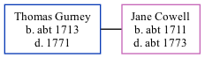

Thomas Gurney c1713 - 1771
[ Home ] | [ Calendar ] | [ Surnames Index ] | [ Family History ]Thomas Gurney, the husband of Jane Cowell (the six times great-aunt of Nigel Horne), was born <i>c.</i> 1713<span class="citation">1</span> and baptized in Kent, England on Feb 26, 1713. He married Jane at St John the Baptist Church, Margate, Kent on May 29, 1732<span class="citation">1</span>, which is also where he died in 1771.
Citations
- Kent, England, Tyler Index to Parish Registers, 1538-1874 Online publication - Provo, UT, USA: Ancestry.com Operations, Inc., 2010. This collection was indexed by Ancestry World Archives Project contributors.Original data - Frank Watt Tyler. The Tyler Collection. Canterbury, Kent, England: The Institute of Herald
Family Tree
Generated by Ged2Site. Last updated on Jul 20, 2025